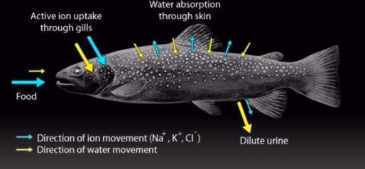
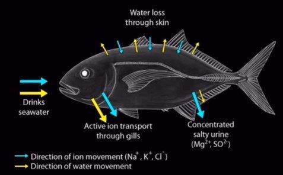
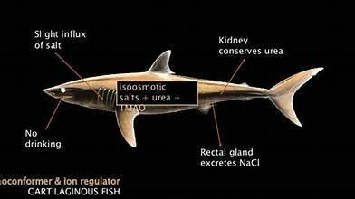

Key Terminology:
- Osmoconformer → an organism that matches their internal osmolarity with that of their external environment (typically marine invertebrates)
- Osmoregulator → an organism that maintains their own internal osmolarity, different of that of their external environment; they generally spend a lot more energy to maintain their internal osmolarity compared to osmoconformers (typically freshwater fish and vertebrates)
- Stenohaline → only able to survive in one type of osmotic environment (either freshwater or saltwater)
- Euryhaline → is able to move between freshwater and saltwater (e.g. salmon)
- Ionocytes → also known as chloride cells, are located in the gills of fish allowing them to effectively transport ions. They are characterized by a high concentration of mitochondria
Building on our understanding of osmosis and tonicity, organisms have evolved sophisticated strategies to overcome the constant threats of water influx and salt loss.
Freshwater Animals
- Kidneys (Fish, Amphibians): Possess well-developed glomeruli for high rates of blood filtration. Their nephron tubules are adapted to reabsorb salts actively (requires energy input because it is against concentration gradient) but reabsorbs minimal water. This results in the production of large volumes of very dilute urine (hypotonic to their body fluids).
- Contractile Vacuoles (Protozoa like Paramecium, Amoeba; some algae): These membrane-bound organelles actively collect excess water from the cytoplasm. The vacuole then fuses with the cell membrane and expels the water to the exterior (exocytosis). This is an active process (uses ATP) to pump water against a potential gradient if we consider the vacuole's contents becoming more concentrated.
- Gills (Fish, some amphibian larvae): Specialized cells called ionocytes (or chloride cells) actively transport ions (like Na+, Cl−) from the dilute freshwater into the bloodstream.
- Skin (Amphibians): Adult amphibians can also absorb salts through their moist skin via active transport.

Saltwater (Marine) Animals
The challenge here is water loss to the hypertonic sea and salt influx.
- Processes & Adaptations in Bony Fish (Teleosts):
They are osmoregulators, maintaining body fluid osmolarity much lower than seawater.
- Drinking Seawater: They ingest large amounts of seawater to compensate for osmotic water loss.
- Salt Excretion from Gills: The absorbed seawater brings in excess salts. Ionocytes in the gills actively transport Na+, K+, and Cl− out of the blood into the seawater, primarily using Na+/K+-ATPase pumps. This is a major energy expenditure, as it is an active process.
- Gut Water Absorption: The intestine absorbs water from the ingested seawater, along with monovalent ions (Na+, Cl−). Divalent ions (like Mg2+, SO42−) are largely left behind and excreted with feces.
- Kidneys: Produce only small volumes of urine that is nearly isotonic to their body fluids (but still hypotonic to seawater). Their primary role is to excrete divalent ions (Mg2+, SO42−) rather than significant water or monovalent salt excretion. Glomeruli are often smaller or even absent in some marine fish.

- Processes & Adaptations in Cartilaginous Fish (Sharks, Rays - Elasmobranchs):
- These are unique. They are often near isotonic or slightly hypertonic to seawater, but not due to high salt content.
- Urea Retention: They maintain high concentrations of urea in their blood and tissues. Urea is an organic osmolyte. This elevates their internal osmotic pressure to match or slightly exceed that of seawater, preventing water loss.
- TMAO (Trimethylamine Oxide): Urea can denature proteins at high concentrations. Sharks produce TMAO, which counteracts this denaturing effect of urea, protecting their proteins.
- Salt Excretion: Despite being nearly isotonic, they still accumulate some salts from seawater. Excess salts (NaCl) are excreted via a specialized gland called the rectal gland, which secretes a fluid rich in NaCl. Their kidneys also play a minor role. They drink little to no seawater.

- Processes & Adaptations in Marine Mammals, reptiles, and birds (Seabirds):
- Highly Efficient Kidneys (Mammals): Marine mammals have kidneys capable of producing very concentrated urine (hypertonic to their body fluids and often to seawater), allowing them to excrete excess salts while conserving water. They obtain most water from their food and metabolic processes.
- Salt Glands (Reptiles, Birds): These animals possess specialized salt glands (located near the eyes, nostrils, or in the tongue depending on the species) that actively remove excess salt from the blood and excrete a highly concentrated salt solution. This allows them to drink seawater and eat marine prey high in salt without dehydrating. Their kidneys are less efficient at concentrating salt than mammal kidneys.
- Excreting nitrogenous wastes as uric acid conserves a lot of water at the expense of energy.
- Processes & Adaptations in Terrestrial Animals:
- The primary challenge is dehydration due to evaporative water loss and excretion, so they reduce water loss or increase water gain.
- Integument (Skin/Covering):
Mammals: Keratinized epidermis (dead, waterproof protein layer), hair/fur (traps a layer of insulating air, reducing evaporation).
Birds: Feathers (insulation, waterproofing), keratinized skin.
Reptiles: Thick, keratinized scales, relatively impermeable skin.
Insects & Arachnids: Waxy epicuticle layer on their exoskeleton prevents desiccation.
Respiratory Surfaces:
- Mammals, Birds, Reptiles: Lungs are internalized, minimizing exposed moist surfaces. Many have nasal turbinates – complex, folded structures in the nasal passages that cool and dehumidify outgoing air, recovering water vapor before it's exhaled.
- Insects: Air enters through spiracles (openings on the body surface) leading to a tracheal system. Spiracles can be opened and closed (often have valves) to reduce water loss, sometimes coordinated with activity levels or CO2 buildup.
Excretion of Nitrogenous Wastes:
- Uric Acid (Birds, Reptiles, Insects): This is the most water-efficient way to excrete nitrogenous waste. Uric acid is poorly soluble in water and is excreted as a semi-solid paste or crystals, with very little water loss.
- Concentrated Urea (Mammals): Mammalian kidneys, particularly those of desert species, are exceptionally good at producing highly concentrated urine. This is achieved by:
- The Loop of Henle: This section of the nephron, especially long in desert mammals, creates a steep osmotic gradient in the renal medulla via the countercurrent multiplier system. The descending limb is permeable to water, while the ascending limb actively transports salts out.
- Collecting Ducts: These pass through the hyperosmotic medulla. Under the influence of Antidiuretic Hormone (ADH or Vasopressin), the collecting ducts become highly permeable to water. Water moves osmotically out of the duct and into the concentrated medulla, re-entering the blood, thus producing very concentrated urine. ADH release is triggered by dehydration or high blood osmolarity.
- Nocturnal Activity:
- Being active during cooler, more humid night hours reduces evaporative water loss.
- Burrowing:
- Living in burrows provides a more humid and cooler microenvironment.
- Seeking Shade:
- Reducing heat load and direct exposure to sun.
- Migration:
- Moving to areas with more water during dry seasons.
- Estivation:
- A state of dormancy during hot, dry periods.
Written by Parthipan Kasiban